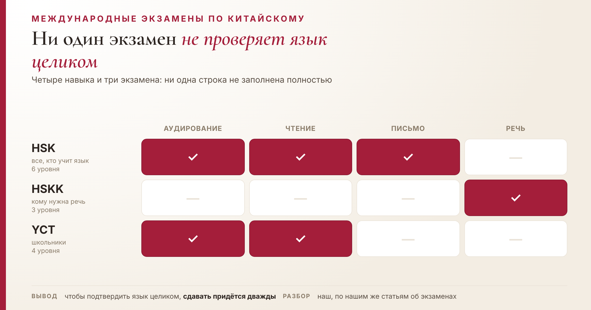
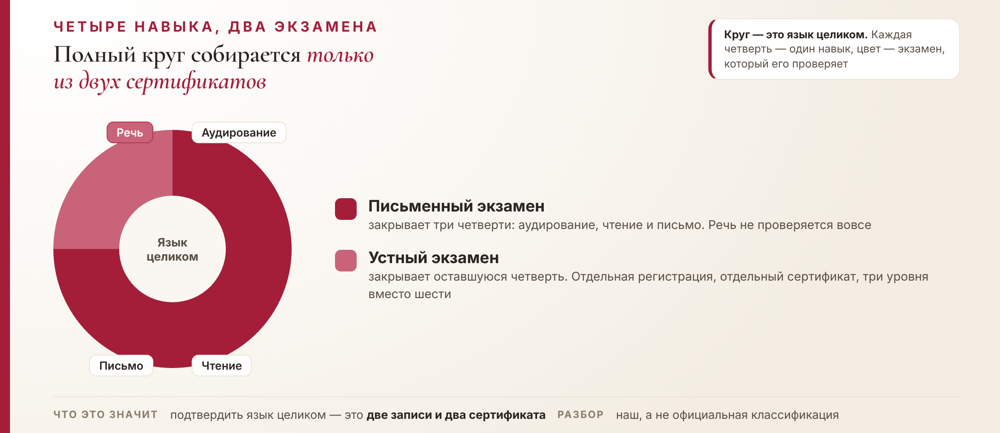

Экзамен
Международные экзамены по китайскому: какой из них ваш и почему одного мало


«Сдать экзамен по китайскому» звучит как одно действие, а на деле это выбор из нескольких разных экзаменов. И ни один из них не проверяет язык целиком: письменный закрывает три навыка из четырёх, речь сдаётся отдельно.
Эта страница — не разбор экзаменов по отдельности: каждый у нас разобран в своей статье. Здесь только то, чего в них нет, — сравнение между собой и признаки, по которым выбирают.
Короткий ответ: экзаменов несколько, и одного обычно мало
Письменный экзамен на уровень владения китайским — тот, который чаще всего и имеют в виду. У него шесть уровней, он проверяет аудирование, чтение и письмо.
Речь он не проверяет вовсе. Для неё есть отдельный устный экзамен со своей регистрацией, своим сертификатом и собственной шкалой из трёх ступеней.
Для школьников есть третий экзамен — короче взрослого, с четырьмя уровнями, и на первых из них над иероглифами стоит пиньинь.
Отсюда и ответ на вопрос «какой экзамен сдают». Тот, который соответствует вашей задаче: кому предъявлять результат, сколько лет сдающему и какой навык нужно подтвердить.
В России чаще всего сдают именно письменный, и по простой причине: его просят вузы и работодатели. Устный добавляется там, где от человека ждут не бумаги, а разговора, а детский живёт своей жизнью при школах и кружках.
И сразу честная оговорка. Деление и сопоставление ниже — наш разбор, а не официальная классификация. Каждый экзамен устроен так, как описывает его организатор, а сравнивать их между собой никто не обязан.
Про слово «международный» тоже стоит сказать. В названиях оно обычно означает одно: экзамен принимают не только в стране языка, и сертификат признают за её пределами. Это не знак качества и не уровень сложности.
Поэтому запрос «международный экзамен по китайскому» почти всегда означает письменный экзамен на уровень владения языком — его сдают чаще остальных, и о нём думают в первую очередь.
Чем экзамены отличаются
Три экзамена, которые мы разбирали, в одной таблице. Четвёртый столбец — самый важный: именно он показывает, что экзамены не взаимозаменяемы.
Читать её стоит не сверху вниз, а по своей задаче: нашли нужный навык — нашли экзамен. В обратную сторону, от названия к навыку, выбор получается случайным.
| Экзамен | Для кого | Уровней | Что проверяет | Форма | Разбор |
|---|---|---|---|---|---|
| HSK | для всех, кто учит китайский | 6 | аудирование, чтение, письмо | письменный | что подтверждает сертификат HSK |
| HSKK | для тех, кому нужна подтверждённая речь | 3 | речь | устный | разбор устного экзамена |
| YCT | для школьников | 4 | аудирование, чтение | письменный | разбор детского экзамена |
Первое, что видно по таблице, — числа уровней разные: шесть, три и четыре. Это три отдельные шкалы, а не одна, и «третий уровень» в каждой означает своё.
Поэтому сравнивать их напрямую нельзя: третий уровень устного экзамена — это высшая ступень, а третий уровень письменного — середина пути.
Ошибка эта встречается и в резюме, и в разговорах: человек пишет «третий уровень», не уточняя, какого экзамена, и собеседник достраивает картину по своему опыту. Уточнять стоит всегда.
То же касается детского экзамена: его уровни примерно повторяют шаг первых ступеней взрослого по объёму словаря, но это не та же шкала, и приравнивать их друг к другу нельзя.
Второе — форма. Два экзамена письменные, один устный. Это не деталь, а разные занятия: к письменному готовятся за столом, к устному — вслух и желательно с собеседником.
Третье — сертификаты. У каждого экзамена он свой, и один другого не заменяет. Сдав письменный, вы не получаете отметку о речи, и наоборот.
Это кажется очевидным, пока не доходит до дела: в списке требований бывает написано просто «сертификат по китайскому», и какой именно — приходится выяснять отдельно.

Есть и четвёртый экзамен, который в запросах встречается, — TOCFL. Это тайваньский экзамен, ориентированный на традиционные знаки. Подробно мы его не разбирали, и деталей я называть не буду: о письменности у нас есть отдельная статья, а о самом экзамене данных нет.
Четыре навыка и ни одного экзамена, который закрывает все
Язык раскладывается на четыре навыка: аудирование, чтение, письмо и речь. Разложим по ним экзамены.
| Экзамен | Аудирование | Чтение | Письмо | Речь |
|---|---|---|---|---|
| HSK | есть | есть | есть | — |
| HSKK | — | — | — | есть |
| YCT | есть | есть | — | — |
Ни одна строка не заполнена целиком. Письменный экзамен закрывает три навыка из четырёх, устный — один, детский — два. Полный набор получается только из двух экзаменов сразу.
Отсюда главный практический вывод страницы: если вам нужно подтвердить язык целиком, сдавать придётся дважды. Это две записи, две даты и два сертификата, и узнавать об этом лучше до подготовки, а не после.
Оговорюсь про письмо: в письменном экзамене оно появляется не с первого уровня, а позже, когда исчезает пиньинь: HSK 1: как сдать первый уровень и HSK 4 в 2026: разбор экзамена. В детском письма от руки нет вовсе: YCT: экзамен для школьников, экзаменационная лексика YCT.
«Хочу сдать экзамен по китайскому» — фраза, после которой я всегда задаю один и тот же вопрос: кому вы будете показывать результат.
От ответа зависит всё остальное. Вузу нужен один документ, работодателю часто другой, школе ребёнка — третий, а если показывать некому, то и экзамен, возможно, не нужен.
Самый частый сюрприз — устная часть. Человек готовится месяцами, сдаёт письменный экзамен, получает сертификат и узнаёт, что от него ждали ещё и подтверждённую речь.
Это не его вина: в разговоре «сдать экзамен по китайскому» звучит как одно действие. А это два отдельных экзамена, с отдельной записью и отдельными сертификатами.
Второй сюрприз случается с родителями. Ребёнка приводят готовиться к взрослому экзамену, хотя для школьников есть свой, с коротким форматом и подсказками над знаками.
Взрослый экзамен ребёнок, бывает, и сдаёт. Но сидеть полтора часа над заданиями, рассчитанными на взрослое внимание, — испытание, которого можно было избежать.
Третий разговор — про тех, кому экзамен не нужен вовсе. Человек учит язык для себя, и сертификат ему некому предъявить. Тогда я честно говорю, что можно не сдавать.
Вывод, который я делаю: выбор экзамена начинается не с уровня и не с даты, а с вопроса «кому показывать». Ответ на него сразу убирает половину вариантов.
По каким признакам выбирают
Четыре вопроса, которые решают выбор. Отвечать на них стоит именно в этом порядке.
- Кому предъявлять результат — вуз, работодатель или школа — у каждого свой список.
- Возраст — для школьников есть отдельный экзамен со своим форматом.
- Какой навык нужно подтвердить — письменный и устный — это два разных экзамена.
- Какая письменность — упрощённые знаки или традиционные.
Первый признак решает больше остальных. Если результат никому не предъявляется, дальше можно не читать: экзамен в этом случае — добровольная проверка, а не обязанность.
Если предъявлять есть кому, узнавайте сразу три вещи: какой экзамен, какой уровень и какой срок давности сертификата. Обычно всё это написано в одном месте — там же, где и само требование.
И отдельно спросите, что именно от вас хотят: письменный сертификат, устный или оба. Этот вопрос задают редко, а он снимает большую часть будущих сюрпризов.
Третий признак — возраст. Взрослый экзамен ребёнок сдать может, но формат рассчитан на взрослое внимание, и детский вариант обычно проходит легче.
Здесь стоит считать не только по возрасту, но и по цели. Если ребёнку нужен результат для школы или для мотивации, детского экзамена достаточно. Если впереди поступление, рано или поздно понадобится взрослый.
Переход между ними не автоматический: сданный детский уровень не засчитывается во взрослом экзамене, это отдельная шкала и отдельный сертификат.
Четвёртый — письменность. Упрощённые знаки и традиционные — разные системы, и экзамены под них тоже разные. Для большинства учащихся вопрос решается сам собой: учат упрощённые, сдают соответствующий экзамен.
Традиционные знаки становятся вопросом в двух случаях: если вы целитесь на Тайвань или если вам нужны старые тексты. Тогда и экзамен выбирается другой, и учебный путь строится иначе.
Все ли сдают экзамен после курсов
Нет. Это вопрос, который задают часто и почти всегда стесняясь, — будто не сдавать неприлично.
| Ваш случай | Что это значит | Решение |
|---|---|---|
| Нужен документ | вуз, работа, виза, стипендия | экзамен сдают |
| Нужна внешняя проверка | понять, где вы на самом деле | экзамен полезен |
| Не нужно ни то, ни другое | учу для себя | можно не сдавать |
Сертификат — это документ, а не оценка вашего китайского. Он нужен, когда его у вас кто-то спрашивает. Если не спрашивает никто, язык от отсутствия сертификата хуже не становится.
Обратное тоже верно, и об этом говорят реже: сертификат не делает язык лучше. Он фиксирует состояние на день экзамена, а дальше всё зависит от того, продолжаете вы заниматься или нет.
У сертификата к тому же есть срок действия, и это ещё один довод не сдавать «про запас»: экзамен, сданный за несколько лет до того, как он понадобился, к нужному моменту может оказаться просроченным.
При этом вторая строка таблицы — не пустая формальность. Внешняя проверка полезна даже без документа: она показывает уровень числом, а не ощущением, и часто оказывается ниже ожидаемого.
Для такой проверки, впрочем, не обязателен настоящий экзамен: достаточно пройти полный прогон по времени дома. Денег это не стоит, а картину даёт ту же.
Как выглядят задания и где это разобрано
Задания у каждого экзамена свои, и пересказывать три разбора на одной странице смысла нет. Коротко, куда смотреть.
Письменный экзамен: устройство разделов и то, что меняется в ходе экзамена, разобрано отдельно, а день экзамена по шагам — здесь: как проходит день экзамена. Как считается результат — здесь: система оценки HSK 4.
Устный экзамен: три уровня со своими форматами, от ответов на вопросы до рассказа по картинке и рассуждения на отвлечённую тему: HSKK 1, HSKK 2, HSKK 3.
Детский экзамен: формат, лексика и день экзамена в Москве — как сдать YCT в Москве. Там же разобрано, что берут с собой и как проходит день, — для ребёнка это обычно важнее самих заданий.
Общее между всеми тремя одно: формат заданий не меняется от сессии к сессии, и это главная причина, по которой прогон по образцу работает. Выучить формат можно заранее, и он не подведёт.
А если нужен не языковой экзамен, а предметный, для поступления в китайский вуз, — это отдельная история: CSCA: экзамен для поступления в вузы Китая. Он проверяет не язык, а школьные предметы, и язык в нём — средство, а не цель.
Частые ошибки
- Считать, что экзамен один. Письменный и устный — разные экзамены с отдельной регистрацией и сертификатами.
- Готовиться, не узнав, что именно просят. Иногда нужен устный, а готовятся к письменному.
- Сравнивать уровни разных экзаменов. Шкалы не совпадают: шесть, три и четыре ступени — это три разные системы.
- Вести ребёнка на взрослый экзамен. Детский короче и устроен под детское внимание.
- Сдавать, потому что «после курсов положено». Положено не всем: экзамен нужен, когда нужен документ.
Чего в статье нет намеренно
- Разбора заданий каждого экзамена. Это сделано в отдельных статьях, ссылки стоят выше.
- Деталей про тайваньский экзамен. Мы его не разбирали, и выдумывать я не буду.
- Делового экзамена по китайскому. У нас о нём нет ни одной статьи, поэтому и здесь его нет.
- Цен и мест регистрации. Блог их не публикует, а сроки и города разобраны отдельно.
- Сравнения с экзаменами по другим языкам. Это другая тема.
- Советов, какой экзамен «престижнее». Такого деления не существует: есть подходящий под задачу и неподходящий.
И ещё об одном умолчании. Я не называю «лучший» экзамен: лучшего не бывает, бывает подходящий под задачу. Если задачи нет, то и выбирать не из чего — и это тоже нормальный ответ.
Не называю я и того, сколько стоит каждый экзамен и где именно записываться: взносы и площадки меняются, а блог таких сведений не публикует. Это выясняется в том центре, где вы собираетесь сдавать.
Частые вопросы (FAQ)
Какой международный экзамен по китайскому сдают в России?
Чаще всего письменный HSK. Рядом с ним есть устный экзамен, который сдаётся отдельно, и отдельный экзамен для школьников. Где и когда проходят сессии, разобрано у нас в статье про даты и регистрацию.
Как сдать экзамен на знание китайского языка?
Сначала выбрать, какой именно: от этого зависит и формат, и подготовка. Порядок шагов от решения сдавать до сертификата разобран у нас отдельно — десять шагов, четыре из которых зависят от календаря центра, а не от вас.
Чем HSKK отличается от HSK?
Это отдельный экзамен, а не часть письменного: своя регистрация, свой сертификат и три уровня вместо шести. Проверяет он то, чего письменный не проверяет вовсе, — речь.
Какой экзамен сдают дети?
Для школьников есть свой экзамен с четырьмя уровнями. Он короче взрослого, рассчитан на детское внимание, а на первых уровнях над иероглифами стоит пиньинь, так что читать знаки необязательно.
Все ли сдают экзамен после курсов?
Нет, и это нормально. Экзамен нужен тогда, когда нужен документ: вузу, работодателю, для визы или стипендии. Если показывать сертификат некому, можно не сдавать — на качество самого языка это не влияет.
Что такое TOCFL и нужен ли он?
Это тайваньский экзамен, ориентированный на традиционные знаки. Подробно мы его не разбирали, деталей я называть не буду. Нужен он в одном случае: если вы учите традиционную письменность или поступаете на Тайвань.
И напоследок то, ради чего эта страница собрана. Из всех вопросов про экзамены самый полезный — не «какой сложнее» и не «какой престижнее», а «кому я покажу результат». Он отсекает лишнее за минуту и оставляет один-два варианта вместо пяти. А дальше остаётся обычная работа: выбрать дату, измерить свой уровень и считать срок. Если выбирать проще вслух, чем в голове, приходите на бесплатный урок: разберём вашу задачу и подберём экзамен под неё.
Источники
- Устройство каждого экзамена — по нашим же разборам: письменного, устного и детского; ссылки стоят в таблицах.
- Числа уровней — шесть, три и четыре — оттуда же.
- Раскладка по четырём навыкам и вывод, что ни один экзамен не закрывает все четыре, — наш разбор, а не официальная классификация.
- То, что устный экзамен самостоятелен и имеет отдельный сертификат, приведено по нашей статье о нём.
- Про тайваньский экзамен утверждается только то, что он ориентирован на традиционные знаки — по нашей статье о выборе письменности; подробностей у нас нет.
- Цен, мест регистрации и ссылок на сторонние сайты не публикую.
- Случаи с устной частью и с ребёнком на взрослом экзамене взяты из занятий Kitai School; имён не привожу.